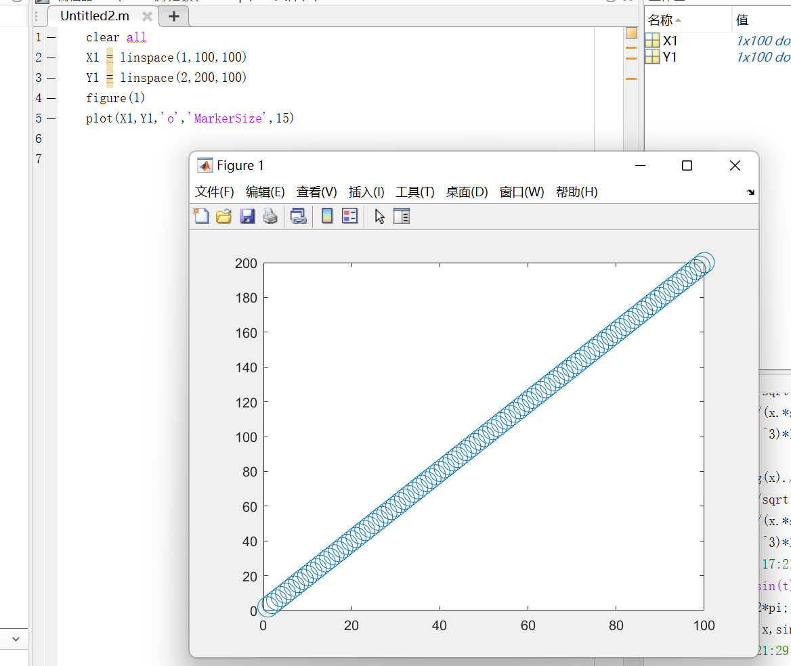
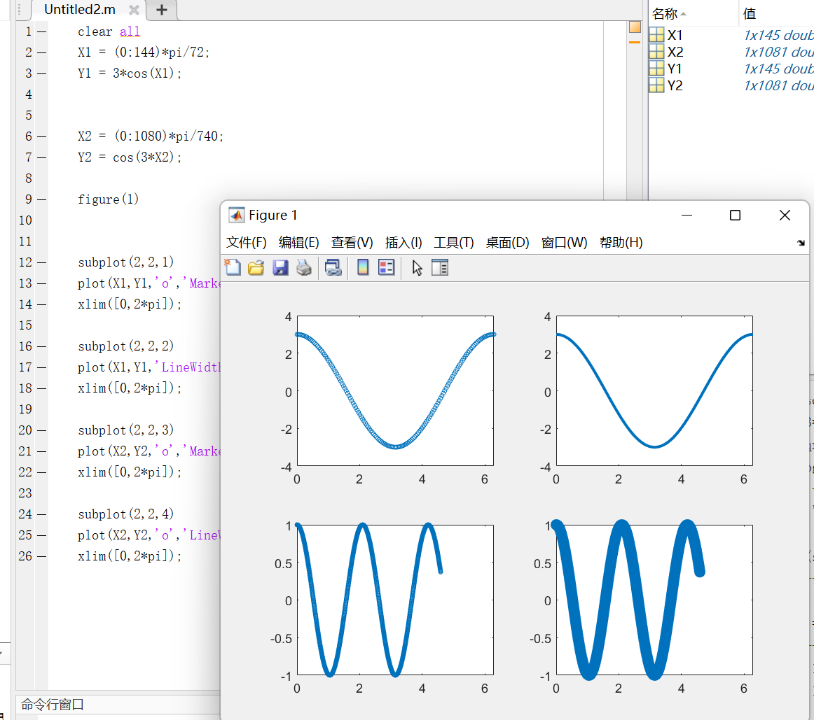
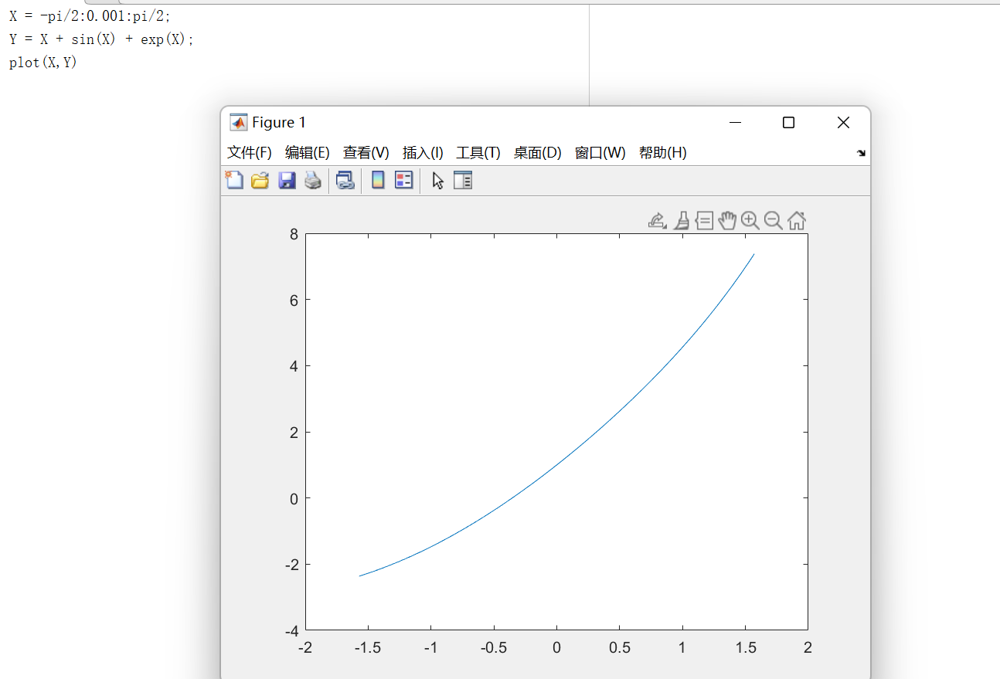
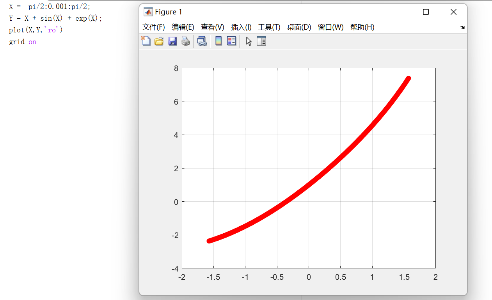
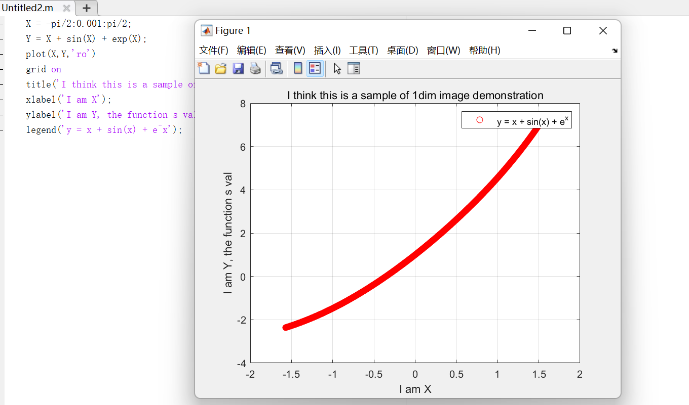

Matlab自学专题1 -- 图像绘制(1)
Matlab自学专题1
图形绘制
我们来做个假设，假设我们已经熟知了Matlab的矩阵操作，基础概念和基本编程框架。我们下面就开始来围绕Matlab的绘图展开说说。
离散数据绘制
什么离散的数据呢？简而言之，就是单蹦的数据，而不是连续的数据。比若说【1，2，3，4，5，6】这就是离散的数据，而集合{x | 9 > x > 6}就不是离散的，而是连续的。换而言之，一个简单的说法，正是这些数据要是可数可列的，我们才说他们是离散的。
现在，打开我们的matlab，来尝试绘制一下离散的数据。
clear all # 清除所有的变量
X1 = linspace(1,100,100) # 产生一个从 1 到 100 的离散行向量
Y1 = linspace(2,200,100) # 产生一个从 2 到 200 的离散行向量
figure(1) # 注意，这是指绘制在第一个弹窗上，可以用一个变量接受返回值！自行查看他是啥吧！
plot(X1,Y1,'o','MarkerSize',15) # 绘图关键指令，他表示绘制一个 Y - X 离散关系图， 这个MarkerSize就是点画多大
连续函数
下面，我们来尝试一下，绘制连续的函数。
注意到，matlab没有那么聪明，可以不带脑子的直接传入函数就直接帮你开画的，我们回顾函数绘制的一般办法，那就是，转向通过化连续 为 离散的变量 的关系来绘制函数，说白了，就是使用足够密集的点来绘制图像。这不正是我们从离散推向连续的过程嘛！
我们只需要像手绘函数图像那样，离散的点出 $[X_i, Y_i ]$那样就好了。那样的话：
clear all
# 划定X的范围， Y的离散值（第一个函数）
X1 = (0:144)*pi/72;
Y1 = 3*cos(X1);
# 划定X的范围， Y的离散值（第二个函数）
X2 = (0:1080)*pi/740;
Y2 = cos(3*X2);
figure(1)
# subplot指令，这里是用来多图像绘制的，subplot正是子图像的意思
subplot(2,2,1) # 一行几个？ 一共几行？ 这是第几个子图像？
plot(X1,Y1,'o','MarkerSize',3);
xlim([0,2*pi]); # 函数用来限定X的绘制范围
#下面雷同了。。。
subplot(2,2,2)
plot(X1,Y1,'LineWidth',2);
xlim([0,2*pi]);
subplot(2,2,3)
plot(X2,Y2,'o','MarkerSize',3);
xlim([0,2*pi]);
subplot(2,2,4)
plot(X2,Y2,'o','LineWidth',2);
xlim([0,2*pi]);
当然，也不是那麽麻烦，实际上，这样也可以：
X1 = -pi/2:0.001:pi/2;
Y1 = x + sin(x) + exp(x);
plot(X1,Y1);
好像这个不太好点对点啊，可不可以加上网格便于观察呢， 当然可以，加上点东西就好了！
首先介绍一下刚才一直没说的那个：plot里的那些’ xxx ‘是什么呢？ 查阅一下，发现是一个叫 PropertyName的东西，就是属性名称，比如说， MarkerSize 就是点的大小， 而 LineWidth 就是绘制图像线宽的属性名称，注意一定要输对，大小写都不要错（尽可能），后面跟上的就是属性值 PropertyValue 了。 当然有一个例外就是图形的样式。 这是不用说 PropertyName的，直接在输完X,Y 之后，直接用单引号括起来想要的款式。
来来，例子上了！
plot(X,Y,'ro') # 就是对上面那个函数，加点东西就好了
grid on #打开网格显示
可是，就是这样拿给别人看，这不好。这是啥啊？？？不知道，含义是啥，不知道。可不可以加点注释呢？可以！
title('I think this is a sample of 1dim image demonstration');
xlabel('I am X');
ylabel('I am Y, the function's val');
legend('y = x + sin(x) + e^x');
很有意思了。 注意到legend 就是图例的意思！
总结一下
我们绘制简单的离散数据与连续函数，使用的就是如下的步骤来完成我们的工作！
（1）准备数据， 就是准备好你的X Y
（2）确定好在那里画，第一个子图，还是哪里，但一定不是你的草稿纸！
（3）调用图像绘制函数来画！ plot是我们现在搞到的
（4）制定好坐标轴的范围
（5）添加绘制的属性（懒狗可以不管）
（6）添加一些注释（针对要不要做的话。。。你知道我要说什么）
（7）图像导出与展示